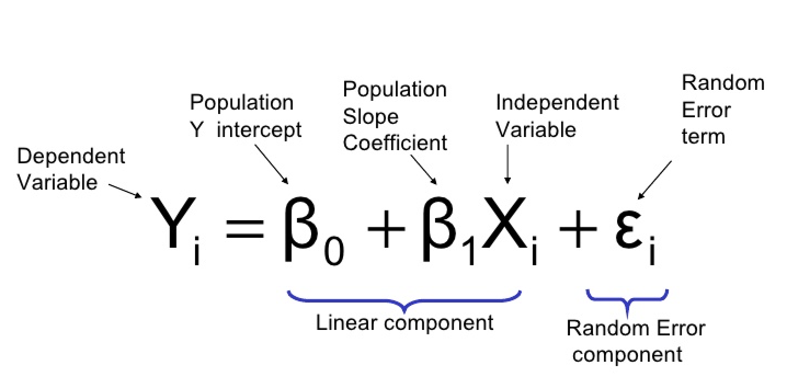

6 Lab V: Introduction to Regression

6.1 Correlation
- Statistical technique that tells use the extent that two variables are linearly related \[r=\frac{\sum_{i=1}^{n}(x_{i}-\bar{x})(y_{i}-\bar{y})}{\sqrt{\sum_{n}^{i=1}(x_{i}-\bar{x})^2\sum_{n}^{i=1}(y_{i}-\bar{y})^2}}\] \[r = \frac{Cov(X,Y)}{SD(X)SD(Y)}\]
- Bounded between \(-1,1\)
- In R,
cor(x,y) - Scatterplot in R
geom_point()

6.2 Introduction to Regression
- Why Regression?
- Basic Model
- Conditional Mean
- Estimation
- Coefficients & Intercepts
6.2.1 Why Regression?
- Regression is the work-horse of quantitative social science
- We use regression when we want to know the relationship between \(x\) and \(y\)
- Specifically, we want to know what a one unit increase in \(x\) means for \(y\)
- Real Data vs Hats
- Hats are expected values
- \(y\) vs \(\hat{y}\)
- Hats are expected values
- Identify a variable of interest, we call this \(y\)
- Ex: vote share, approval rating, gdp, etc.
- Take its mean, \(\bar{y}\)
- We have variation in our \(y\) variable, though, e.g., some values are high and others are low
- Next find a variable that we think explains this variation, we call this \(x\)
- Then estimate the relationship between \(x\) and \(y\)
- We call \(x\) the treatment variable, causal variable, independent variable, predictor variable, explanatory variable
- We call \(y\) the dependent variable, outcome variable, response variable
6.2.2 Correlation vs Regression
- Similarities
- Both show the direction and strength of the relationship between two variables
- When correlation is negative, \(r<0\), then the regression slope will be negative, \(\beta_{1}<0\)
- When correlation is positive, the regression slope will be positive
- Differences
- Regression is for causation (with additional steps) while correlation is for, well, correlation
- \(X\) and \(Y\) are interchangeable in correlation, but results will change if you swap \(X\) and \(Y\) in regression
- Correlation is a single statistic while regression gives us an equation
6.2.3 Basic Model
\[\hat{y_{i}} = \hat{\beta_{0}} + \hat{\beta_{1}}x_{i}\]
analogous to
\[y = mx + b\]
Where:
- \(\hat{y_{i}} = y\), \(\hat{\beta_{0}} = b\), \(\hat{\beta_{1}}\) = m, and \(x_{i}=x\)
- \(\beta_{1}\) is the slope
- \(\beta_{0}\) is the y-intercept
Example of a model you may (will) see in the comparative politics literature:
\[GDPGrowth_{i} = \beta_{0} + \beta_{1}Democracy_{i} + \epsilon_{i}\]
- Why no hats?
6.2.4 Conditional Mean
- Regression tells us the conditional mean of \(y\) given \(x\)
- \(E[Y|X] = \beta_{0} + \beta_{1}X\)
## Mean of All Children's Heights
mean(Galton$height)## [1] 66.76069## Mean of Female Children's Heights
mean(Galton$height[Galton$sex == "F"])## [1] 64.11016## Mean of Male Children's Heights
mean(Galton$height[Galton$sex == "M"])## [1] 69.22882## Conditional Mean with Regression
lm(height ~ sex, data = Galton)##
## Call:
## lm(formula = height ~ sex, data = Galton)
##
## Coefficients:
## (Intercept) sexM
## 64.110 5.1196.2.5 Estimation
\[\hat{\beta}=\frac{\sum_{i=1}^{n}(x_{i}-\bar{x})(y_{i}-\bar{y})}{\sum_{n}^{i=1}(x_{i}-\bar{x})^2}\] \[\hat{\beta}= \frac{Cov(x,y)}{Var(x)}\]
- Intuitively, \(\hat{\beta}\) is the variance of \(x\) and \(y\) together divided by the variance of \(x\)
- Thus, you are left only with the variation in \(y\) caused by \(x\)
- The main result of estimation is the coefficient and intercept
- In R,
lm(y ~ x)
6.2.6 Coefficients & Intercepts
- Coefficient
- A one unit increase in \(x\) is associated with a \(\hat{\beta_{1}}\) increase in \(y\)
- Be very careful about the units of \(x\)
- For example, an \(x\) that takes the values 0-1, a one unit increase is the full range of \(x\)
- Intercept
The fitted value of \(y\) when \(x=0\)
We multiply any given value of x by the constant \(\hat{\beta_{1}}\) and add the intercept to get \(\hat{y}\), the fitted value of y
6.2.7 Scatterplots & Regression Lines
- How do we interpret \(\hat{\beta}\) and \(\hat{\alpha}\)? - What do you expect a child’s height will be if their father’s height is 70 inches?
## Mean when father is 70 inches tall
mean(Galton$height[Galton$father == 70])## [1] 66.94885- How would we find the residuals?

- \(\hat{\epsilon} = y_i - \hat{y_i}\)
6.3 Lab Questions
- Download the Correlates of War dataset from Canvas.
- We are going to learn how to make scatterplots, find correlations, and run simple regressions.
- Sarkees, Meredith Reid and Frank Wayman (2010). Resort to War: 1816 – 2007. Washington DC: CQ Press.
6.3.1 Question I - Load in the Data.
## Loading in Data
library(readr)
cow <- read_csv("~/GOVT8001/Lab 5/Intra-StateWarData_v4.1.csv")6.3.2 Question II - Create a scatterplot to show the joint distribution of war deaths by each side. Experiment with subsetting the data to different values of war deaths and visualization styles. Also, be careful about missing data and unknown values. Add a regression line.
## Scatterplot
cow %>%
filter(SideADeaths < 20000 & SideADeaths > 0,
SideBDeaths < 20000 & SideBDeaths > 0,
EndYear1 >= 0) %>%
ggplot(aes(x = SideADeaths, y = SideBDeaths)) +
geom_point() +
geom_abline(method = "lm", col = "dark blue") +
theme_bw() +
labs(title = "Joint Distribution of War Deaths")6.3.3 Question III - What is the correlation coefficient for the relationship you depicted in Question II. What is the regression coefficient? How do we interpret each? Only filter out the less than zero observations for this question.
## Filtering Data
cow_filtered <- cow %>%
filter(SideADeaths > 0,
SideBDeaths > 0)
## Correlation
cor(cow_filtered$SideADeaths, cow_filtered$SideBDeaths)## [1] 0.8043606## Regression
cow %>%
filter(SideADeaths > 0,
SideBDeaths > 0) %>%
lm(SideBDeaths ~ SideADeaths, data = .) %>%
summary()##
## Call:
## lm(formula = SideBDeaths ~ SideADeaths, data = .)
##
## Residuals:
## Min 1Q Median 3Q Max
## -191383 -3771 -2030 -10 515351
##
## Coefficients:
## Estimate Std. Error t value Pr(>|t|)
## (Intercept) 2924.15036 3652.12170 0.801 0.424
## SideADeaths 1.08097 0.06124 17.652 <0.0000000000000002 ***
## ---
## Signif. codes: 0 '***' 0.001 '**' 0.01 '*' 0.05 '.' 0.1 ' ' 1
##
## Residual standard error: 46330 on 170 degrees of freedom
## Multiple R-squared: 0.647, Adjusted R-squared: 0.6449
## F-statistic: 311.6 on 1 and 170 DF, p-value: < 0.000000000000000226.3.4 Question IV - Use both regression - the lm() function and the mean() function to show the difference between total war deaths depending on if a war was internationalized or not. Create a total deaths variable for this question.
## Difference in Means Based on Internationalization with Regression
cow_filtered %>%
mutate(total_deaths = SideADeaths + SideBDeaths) %>%
lm(total_deaths ~ Intnl, data = .) %>%
summary()##
## Call:
## lm(formula = total_deaths ~ Intnl, data = .)
##
## Residuals:
## Min 1Q Median 3Q Max
## -60572 -25549 -23574 -16024 1173351
##
## Coefficients:
## Estimate Std. Error t value Pr(>|t|)
## (Intercept) 26649 11102 2.400 0.0175 *
## Intnl 34922 23621 1.478 0.1411
## ---
## Signif. codes: 0 '***' 0.001 '**' 0.01 '*' 0.05 '.' 0.1 ' ' 1
##
## Residual standard error: 128500 on 170 degrees of freedom
## Multiple R-squared: 0.01269, Adjusted R-squared: 0.006887
## F-statistic: 2.186 on 1 and 170 DF, p-value: 0.1411## With Mean
cow_filtered %>%
mutate(total_deaths = SideADeaths + SideBDeaths) %>%
group_by(Intnl) %>%
summarize(avg_deaths = mean(total_deaths))## # A tibble: 2 × 2
## Intnl avg_deaths
## <dbl> <dbl>
## 1 0 26649.
## 2 1 61572.## Differences
## With Mean
cow_filtered %>%
mutate(total_deaths = SideADeaths + SideBDeaths) %>%
filter(Intnl == 1) %>%
summarize(non_int_deaths = mean(total_deaths)) %>%
pull(non_int_deaths) -
cow_filtered %>%
mutate(total_deaths = SideADeaths + SideBDeaths) %>%
filter(Intnl == 0) %>%
summarize(non_int_deaths = mean(total_deaths)) %>%
pull(non_int_deaths)## [1] 34922.346.3.5 Question V - Write a loop to find the average total deaths based on the month the war started in. Do the same with dplyr.
## Wrangling Data
cow_filtered <- cow_filtered %>%
filter(StartMonth1 > 0) %>%
mutate(total_deaths = SideADeaths + SideBDeaths)
## Loop
for (i in unique(cow_filtered$StartMonth1)) {
x <- mean(cow_filtered$total_deaths[cow_filtered$StartMonth1 == i])
names(x) <- i
print(x)
}## 6
## 12310.33
## 3
## 62869.5
## 7
## 64465.71
## 2
## 7942.857
## 8
## 8314.538
## 10
## 21915.77
## 4
## 62369.33
## 11
## 48016.43
## 5
## 6795
## 9
## 14526.15
## 1
## 15822.15
## 12
## 75963.08## With dplyr
cow_filtered %>%
group_by(StartMonth1) %>%
summarise(avg_death_by_month = mean(total_deaths))## # A tibble: 12 × 2
## StartMonth1 avg_death_by_month
## <dbl> <dbl>
## 1 1 15822.
## 2 2 7943.
## 3 3 62870.
## 4 4 62369.
## 5 5 6795
## 6 6 12310.
## 7 7 64466.
## 8 8 8315.
## 9 9 14526.
## 10 10 21916.
## 11 11 48016.
## 12 12 75963.